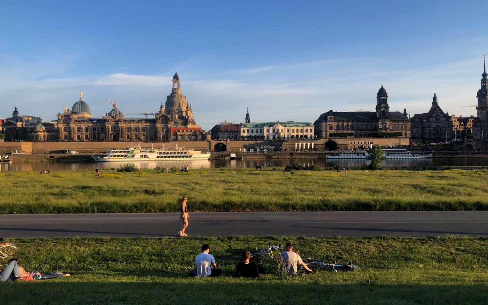
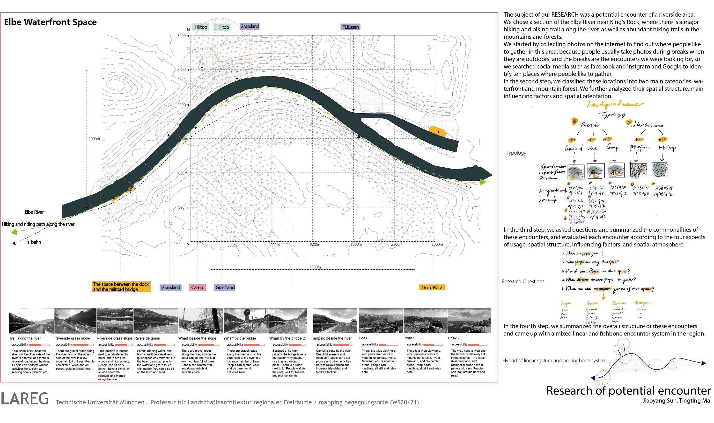
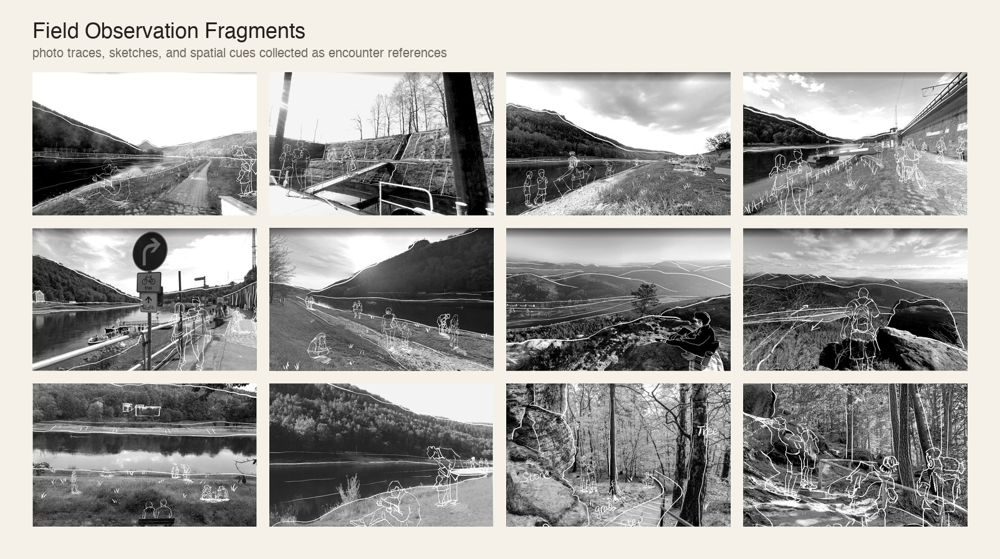

Photo Traces
Using public image traces to locate places where people pause, gather, and document outdoor experiences.
Mapping research / Riverside encounters

This mapping study investigates how people encounter riverside landscapes along a section of the Elbe River near Koenigstein, where waterfront paths, grass slopes, bridges, campsites, and mountain viewpoints form a sequence of gathering situations.
Starting from online photo traces and visual site readings, the project classifies gathering places into waterfront and mountain-forest types, then compares accessibility, spatial structure, influencing factors, directionality, and atmosphere.
Using public image traces to locate places where people pause, gather, and document outdoor experiences.
Comparing waterfront and mountain-forest situations through repeated spatial patterns.
Reading access, edges, views, slope, infrastructure, and atmospheres as conditions for gathering.
Summarizing encounters as a mixed linear and herringbone system along the river corridor.

